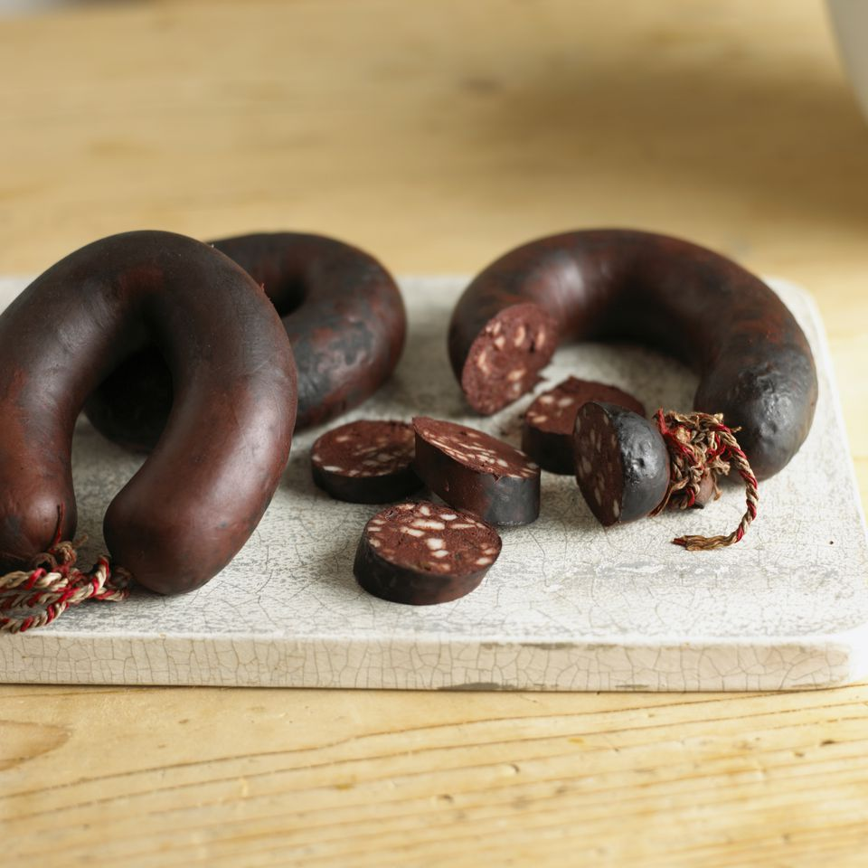

German Blood Sausage : Blutwurst
Delicious fatty blood sausage with plenty of protein. Just like Grandma used to make!
Ingredients
- Onions : 2
- Clarified Butter : 1 tbsp
- Sauerkraut : 600g
- Meat soup (broth) : 350ml
- Caraway seeds : 1 tsp
- Peppercorns : ½ tsp
- Juniper berries : 4
- Bay leaves : 2
- Floury potatoes : 600g
- Blood sausages : 4
- Liver sausages : 4
- Milk (3.5% fat) : 150 ml
- Butter : 40g
- Nutmeg : 1 tsp
- Salt : to taste
Preparation
- Peel and cut an onion into strips. Heat the clarified butter in a saucepan and sauté the onion for 1-2 minutes until translucent. Mix in the well-drained sauerkraut and deglaze with the broth.
- Crush caraway seeds, pepper and juniper in a mortar and add to the cabbage along with the bay leaves. Sprinkle salt and cook covered over low heat for about 30 minutes.
- Peel and wash the potatoes and cook in salted boiling water for 25-30 minutes.
- Put the sausages in a saucepan with boiling salted water and heat in it for about 10 minutes, but do not boil.
- Drain the potatoes, let the water evaporate and press through a potato press. Heat the milk, add to the potatoes with 20g butter. Season the potatoes with salt and freshly grated nutmeg and stir everything into a creamy puree.
- Peel the remaining onion and cut it into rings. Heat the remaining butter in a pan and brown the onion in it. Garnish the puree with the onion butter, seasoned cabbage and drained sausages on plates and serve hot.